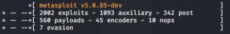

Metasploit
Metasploit Framework is a subproject of Metasploit Project,
it is a tool for developing and executing exploit code against a remote target machine
update metasploit framework:
apt update; apt install metasploit-framework
metasploit is updated weekly with new exploits, good practice is to keep it updated
interfaces for Metasploit Framework• web interface
•
msfconsole: command prompt interface
•
msfvenom: Convert a Metasploit payload into a standalone file (EXE, Linux binary, JavaScript, VBA, or raw) and encode it to help evasion
•
msfd: a daemon that listens by default on TCP port 55554, offering up a msfconsole to anyone that connects to it (using for example a Netcat client, which can make a connection to an arbitrary TCP port)
◇ useful if we need to access to a single Metasploit installation from multiple users at the same time
◇ no authentication or encryption so is not recommended to use it for penetration tests
•
msfrpcd: Metasploit controllable via XML over Remote Procedure Call, listening on TCP port 55553, offering access via SSL
•
msfcli: command line, all options specified in a single command, useful for scripts
Metasploit modulesroot@kali:/# ls usr/share/metasploit-framework/modules
•
auxiliary: directory that contains modules associated with:
◇ port scanning
◇ scanning for vulnerable systems
◇ launching denial-of-service attacks
◇ ...
•
encoders: directory of modules that convert an exploit-and-payload combination to a different form, encoding it:
◇ to avoids certain characters that might be filtered out by the target system.
◇ to not match the signatures of an IPS or IDS tool
•
exploits: directory of Metasploit exploits
•
nops: directory that contains scripts that generate NOP sleds for different architectures.
A NOP(pronounced either "nop" or "no-op") mean No-Operation. A series of NOPs is called a NOP-sled.
Usually used the NOP-sled are used in buffer exploit attack to make a program jump to an area of memory in which the attacker has inserted the payload code.
for more go to the
Buffer Overflow chapter•
payloads: directory of Metasploit payloads
•
post: directory with modules run after successful exploitation occurs